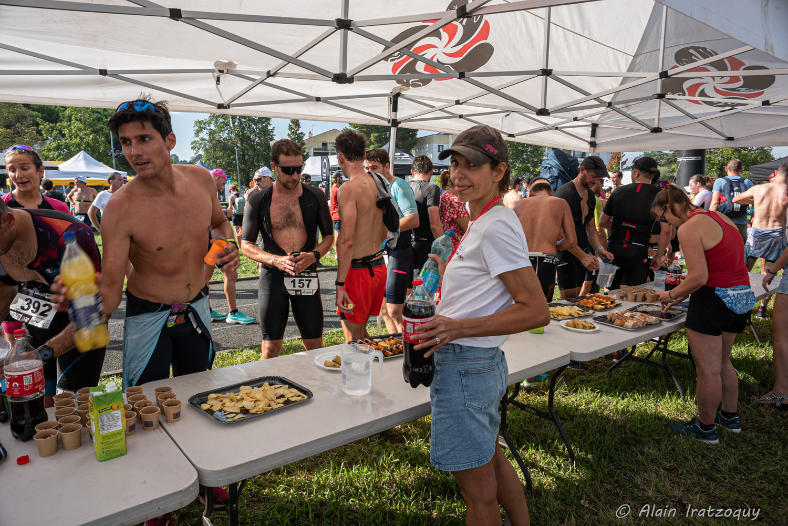

Rejoins l’aventure en tant que bénévole !
Pourquoi devenir bénévole ?
- Participer à une belle aventure humaine : Tu feras partie d’une équipe soudée, dynamique et bienveillante.
- Vivre l’événement de l’intérieur : Une autre façon de profiter de l’ambiance du triathlon, au plus près des athlètes.
- Un pack bénévole : Repas, dotation et soirée, souvenirs et bonne humeur garantis !
- Faire une vraie différence : Sans toi, pas de départ, pas de ravito, pas de ligne d’arrivée ! C’est toi qui fais vibrer l’événement.
Les missions possibles
Il y a une place pour chacun·e, selon tes envies et disponibilités :
- Accueil et orientation des participants
- Gestion des ravitaillements
- Signaleur·se sur le parcours
- Distribution des dossards
- Logistique, installation et rangement
Pas besoin d’être sportif·ve, juste motivé·e et souriant·e ! On t’accompagne et on te briefe selon ta mission.
Rejoins-nous !
Prêt·e à faire partie de l’équipe ?
Remplis notre formulaire et on te recontacte rapidement avec toutes les infos pratiques.